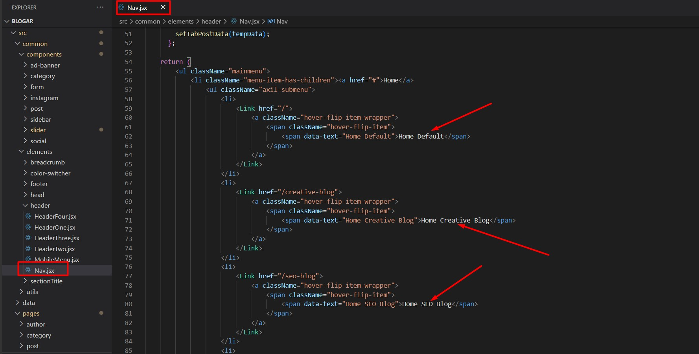

1. Introduction
We would like to thank you for choosing Blogar.
We made Blogar from the ground-up with flexibility in mind. Each element of Blogar
is extremely customizable, where you can make
Blogar to reflect your own
branding styles.
The guide gives you detailed methodologies about how you can customize Blogar and make it fit your brand perfectly!
1.1 Requirements
There are system requirements in order to install and setup Blogar template and its components properly. Make sure that you are running the node.js and npm in your computer. You have to maintain this version (Node js >= 14.0.0 and npm >= 5.6)
Recommended Version Nodejs v16.15.0
If you don't have Node js in your computer please download and install from here: https://nodejs.org/en/download/

Install Npm Packages
NPM : You must have to npm install packages. You can do this by running npm install from the root of your project to install all the necessary dependencies.
npm install
Development server
Run npm run dev for a dev server. Navigate to http://localhost:3000/ . The app will automatically reload if you change any of the source files.
npm run dev
Build
Run npm run build to build the project. The build artifacts will be stored in the .next/ directory.
npm run build
Run npm run start to start build version in your localhost.
npm run start
1.2. What's Included
After purchasing Blogar template on themeforest.net with your Envato account, go to your Download page. You can choose to download Blogar template only or the entire Blogar template package which contains the following files:
- blogar: An Installable Next js template file.
- documentation: This folder contains what you are reading now.
- Licensing.
2. Next Js Installation
Please follow the instructions given below how you can install Next js on your local host:
Open you command prompt and run those command for local host
npm install
npm run dev
Know more about Next Js Project Deployment Please Click here
3.1. Change Site Title and Favicon
To change your Site title and Favicon open the blogar in your editor and go to the location by following screenshot which are given bellow.
You can change Site title following this screenshot
You can change Favicon following this screenshot
3.2. Change Logo
To change your Site Logo open the blogar in your editor and go to the location by following screenshot which are given bellow.
3.3. Customize Menu
To customize your Site Menu open the blogar in your editor and go to the location by following screenshot which are given bellow.
To customize your Site Mobile Menu open the blogar in your editor and go to the location by following screenshot which are given bellow.
3.4. Default Home Page
index.js file under the src/pages folder will be set default home page automatically
4.1. Header
Here is all header layout you can use these all header from here
4.2. Footer
Here is all header layout you can use these all header from here
4.3. Social Icon
To change Social Icon
4.4. Page Slider
To change Page Slider
4.5. Global Color
To change Blogar Global Color
4.6. Change FontAwesome icons
- Open the file with a text-editor from where you want to change any FontAwesome icon
- Choose and collect an icon from fontawesome.com
- Replace the existing icon from the file with the new icon you got from fontawesome.com
To get the icon from fontawesome.com-
- Go to fontawesome.com
- Click the icon tab
- Search for your desired icon font and click on the thumbnail to get the icon
-
Copy the red bordered text as shown in the following image

- Collect this text and replace i tag class attribute to className (<i className="fal fa-clock"></i>) and use this icon anywere in your project
4.7. RTL Version
To enable RTL Mode please follow this insturction:
- Remove this import 'bootstrap/dist/css/bootstrap.css'; line which is mark with red line
- Add here this line: import 'bootstrap/dist/css/bootstrap.rtl.css'; and save the file
- File Location src/pages/_app.js
- Uncomment this @import "rtl/rtl"; line which is mark with red line and save the file
- File Location src/styles/style.scss

5. Blogar Posts
All post components location
All post .md file format
6. Support
Support Scope
Included in Free Support Scope:
- Fixing bugs
- Helping clients in changing site contents by sending instructions that couldn’t be covered by documentation
NOT Included in Free Support Scope:
- Any type of custom changes
- Any type of request to update clients’ site contents
Paid Support Scope:
Paid support is not a part of Free Support when you purchase the template from themeforest. We understand that some clients need custom changes while using our template. For that we kept an option for paid support which includes:
- Custom change request
- Custom pages
- Custom features
We kept a flat rate for our paid support which is $35/hour.
Support Ticket
Please send your support request here. You will response within 1 business day.
Regards,
Axilthemes Support Team